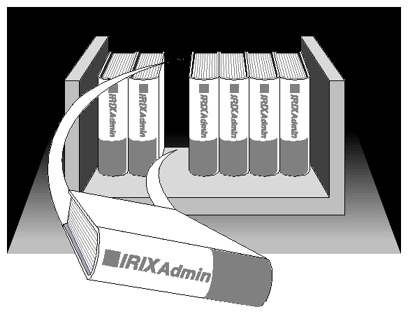

Next | Prev | Top | Contents | Index
IRIX Admin Manual Set

This guide is part of the IRIX Admin manual set, which is intended for administrators: those who are responsible for servers, multiple systems, and file structures outside the user's home directory and immediate working directories. If you maintain systems for others or if you require more information about IRIX than is available in the end-user manuals, these guides are for you. The IRIX Admin guides are available through the IRIS InSight online viewing system.
The set includes these volumes:
- IRIX Admin: Software Installation and Licensing--Explains how to install and license software that runs under IRIX, the Silicon Graphics implementation of the UNIX operating system. Contains instructions for performing miniroot and live installations using Inst, the command-line interface to the IRIX installation utility. Identifies the licensing products that control access to restricted applications running under IRIX and refers readers to licensing product documentation.
- IRIX Admin: System Configuration and Operation--Lists good general system administration practices and describes system administration tasks, including configuring the operating system; managing user accounts, user processes, and disk resources; interacting with the system while in the PROM monitor; and tuning system performance.
- IRIX Admin: Disks and Filesystems--Explains disk, filesystem, and logical volume concepts. Provides system administration procedures for SCSI disks, XFS and Extent File System (EFS) filesystems, XLVlogical volumes, and guaranteed-rate I/O.
- IRIX Admin: Networking and Mail--Describes how to plan, set up, use, and maintain the networking and mail systems, including discussions of sendmail, UUCP, SLIP, and PPP.
- IRIX Admin: Backup, Security, and Accounting--Describes how to back up and restore files, how to protect your system's and network's security, and how to track system usage on a per-user basis.
- IRIX Admin: Peripheral Devices--Describes how to set up and maintain the software for peripheral devices such as terminals, modems, printers, and CD-ROM and tape drives.
- IRIX Admin: Selected Reference Pages (not available in InSight)--Provides concise reference page (manual page) information on the use of commands that may be needed while the system is down. Generally, each reference page covers one command, although some reference pages cover several closely related commands. Reference pages are available online through the man(1) command.
Next | Prev | Top | Contents | Index